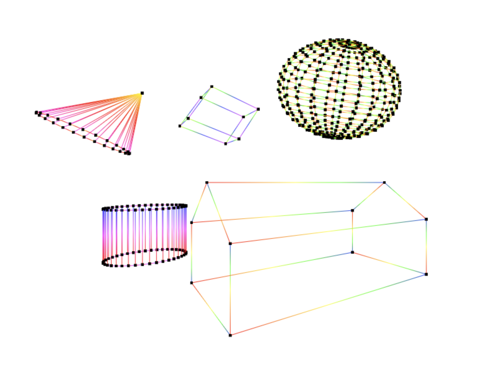

Description
Implement 3D line drawing by projecting models onto the view-plane using HTML's Canvas 2D API. In other words, this simulates how a camera views 3D models and projects it on a picture. In addition to the basic projection, it also adds a rotation animation to each model with defined speed in revolutions per second.
Live Demo Source CodeSample Code for 3D Transformation
// create a 4x4 matrix to the parallel projection / view matrix
function mat4x4Parallel(prp, srp, vup, clip) {
// clip: L, R, B, T, N, F
// 0, 1, 2, 3, 4, 5
// VRC
let n_axis = prp.subtract(srp);
n_axis.normalize();
let u_axis = vup.cross(n_axis);
u_axis.normalize();
let v_axis = n_axis.cross(u_axis);
// Center of window = [ (L+R)/2 , (T+B)/2 , -near ]
let cw = Vector3((clip[0] + clip[1]) / 2, (clip[2] + clip[3]) / 2, -clip[4]);
// Direction of Projection
// prp at origin is [0, 0, 0]
let dop = cw.subtract(Vector3(0, 0, 0));
// 1. translate PRP to origin
let translate = new Matrix(4, 4);
mat4x4Translate(translate, -prp.x, -prp.y, -prp.z);
// 2. rotate VRC such that (u,v,n) align with (x,y,z)
let rotate = new Matrix(4, 4);
rotate.values = [[u_axis.x, u_axis.y, u_axis.z, 0],
[v_axis.x, v_axis.y, v_axis.z, 0],
[n_axis.x, n_axis.y, n_axis.z, 0],
[0, 0, 0, 1]]
// 3. shear such that CW is on the z-axis
let shear = new Matrix(4, 4);
let shx = -dop.x / dop.z;
let shy = -dop.y / dop.z;
mat4x4ShearXY(shear, shx, shy);
// 4. translate near clipping plane to origin
let translateClipping = new Matrix(4, 4);
mat4x4Translate(translateClipping, 0, 0, clip[4]);
// 5. scale such that view volume bounds are ([-1,1], [-1,1], [-1,0])
let scale = new Matrix(4, 4);
let sx = 2 / (clip[1] - clip[0]); // sx = 2 / (R - L)
let sy = 2 / (clip[3] - clip[2]); // sy = 2 / (T - B)
let sz = 1 / clip[5]; // sz = 1 / far
mat4x4Scale(scale, sx, sy, sz);
let transform = Matrix.multiply([scale, translateClipping, shear, rotate, translate]);
return transform;
}
// create a 4x4 matrix to the perspective projection / view matrix
function mat4x4Perspective(prp, srp, vup, clip)
{
let n_axis = prp.subtract(srp);
n_axis.normalize();
let u_axis = vup.cross(n_axis);
u_axis.normalize();
let v_axis = n_axis.cross(u_axis);
let cw = Vector3((clip[0]+clip[1])/2,(clip[2]+clip[3])/2,-clip[4]);
let dop = cw.subtract(Vector3(0,0,0));
// 1. translate PRP to origin
let translate = new Matrix(4,4);
mat4x4Translate(translate,-prp.x,-prp.y,-prp.z);
// 2. rotate VRC such that (u,v,n) align with (x,y,z)
let rotate = new Matrix(4,4);
rotate.values = [[u_axis.x, u_axis.y, u_axis.z, 0],
[v_axis.x, v_axis.y, v_axis.z, 0],
[n_axis.x, n_axis.y, n_axis.z, 0],
[0, 0, 0, 1]];
// 3. shear such that CW is on the z-axis
let shear = new Matrix(4,4);
let shx = -dop.x/dop.z;
let shy = -dop.y/dop.z;
mat4x4ShearXY(shear,shx,shy);
// 4. scale such that view volume bounds are ([z,-z], [z,-z], [-1,zmin])
let scale = new Matrix(4,4);
let sperx = 2*clip[4]/((clip[1] - clip[0])*clip[5]);
let spery = 2*clip[4]/((clip[3] - clip[2])*clip[5]);
let sperz = 1/clip[5];
mat4x4Scale(scale,sperx,spery,sperz);
let transform = Matrix.multiply([scale,shear,rotate,translate]);
return transform;
}
// create a 4x4 matrix to project a parallel image on the z=0 plane
function mat4x4MPar() {
let mpar = new Matrix(4, 4);
mpar.values = [[1, 0, 0, 0],
[0, 1, 0, 0],
[0, 0, 0, 0],
[0, 0, 0, 1]];
return mpar;
}
// create a 4x4 matrix to project a perspective image on the z=-1 plane
function mat4x4MPer() {
let mper = new Matrix(4, 4);
mper.values = [[1, 0, 0, 0],
[0, 1, 0, 0],
[0, 0, 1, 0],
[0, 0, -1, 0]];
return mper;
}
///////////////////////////////////////////////////////////////////////////////////
// 4x4 Transform Matrices //
///////////////////////////////////////////////////////////////////////////////////
// set values of existing 4x4 matrix to the identity matrix
function mat4x4Identity(mat4x4) {
mat4x4.values = [[1, 0, 0, 0],
[0, 1, 0, 0],
[0, 0, 1, 0],
[0, 0, 0, 1]];
}
// set values of existing 4x4 matrix to the translate matrix
function mat4x4Translate(mat4x4, tx, ty, tz) {
mat4x4.values = [[1, 0, 0, tx],
[0, 1, 0, ty],
[0, 0, 1, tz],
[0, 0, 0, 1]];
}
// set values of existing 4x4 matrix to the scale matrix
function mat4x4Scale(mat4x4, sx, sy, sz) {
mat4x4.values = [[sx, 0, 0, 0],
[0, sy, 0, 0],
[0, 0, sz, 0],
[0, 0, 0, 1]];
}
// set values of existing 4x4 matrix to the rotate about x-axis matrix
function mat4x4RotateX(mat4x4, theta) {
let degree = (Math.PI / 180) * theta;
mat4x4.values = [[1, 0, 0, 0],
[0, Math.cos(degree), -Math.sin(degree), 0],
[0, Math.sin(degree), Math.cos(degree), 0],
[0, 0, 0, 1]];
}
// set values of existing 4x4 matrix to the rotate about y-axis matrix
function mat4x4RotateY(mat4x4, theta) {
let degree = (Math.PI/180)*theta;
mat4x4.values = [[Math.cos(degree), 0, Math.sin(degree), 0],
[0, 1, 0, 0],
[-Math.sin(degree), 0, Math.cos(degree), 0],
[0, 0, 0, 1]];
}
// set values of existing 4x4 matrix to the rotate about z-axis matrix
function mat4x4RotateZ(mat4x4, theta) {
let degree = (Math.PI / 180) * theta;
mat4x4.values = [[Math.cos(degree), -Math.sin(degree), 0, 0],
[Math.sin(degree), Math.cos(degree), 0, 0],
[0, 0, 1, 0],
[0, 0, 0, 1]];
}
// set values of existing 4x4 matrix to the shear parallel to the xy-plane matrix
function mat4x4ShearXY(mat4x4, shx, shy) {
mat4x4.values = [[1, 0, shx, 0],
[0, 1, shy, 0],
[0, 0, 1, 0],
[0, 0, 0, 1]];
}
// set values of existing 4x4 matrix to the rotate about given axis
function mat4x4RotateGivenAxis(mat4x4, axis, degree) {
let radian = (Math.PI / 180) * degree;
let cos = Math.cos(radian);
let sin = Math.sin(radian);
let x = axis.x;
let y = axis.y;
let z = axis.z;
mat4x4.values = [[cos + Math.pow(x,2)*(1-cos), x*y*(1-cos) - z*sin, x*z*(1 - cos) + y*sin, 0],
[y*x*(1 - cos) + z*sin, cos + Math.pow(y,2)*(1 - cos), y*z*(1 - cos) - x*sin, 0],
[z*x*(1 - cos) - y*sin, z*y*(1 - cos) + x*sin, cos + Math.pow(z,2)*(1 - cos), 0],
[0, 0, 0, 1]];
}
// create a new 3-component vector with values x,y,z
function Vector3(x, y, z) {
let vec3 = new Vector(3);
vec3.values = [x, y, z];
return vec3;
}
// create a new 4-component vector with values x,y,z,w
function Vector4(x, y, z, w) {
let vec4 = new Vector(4);
vec4.values = [x, y, z, w];
return vec4;
}